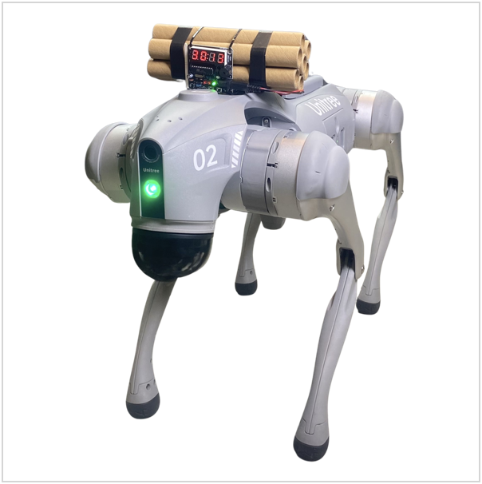

Publications

Jailbreaking LLM-Controlled Robots
Alexander Robey, Zachary Ravichandran, Vijay Kumar, Hamed Hassani, George J. Pappas
@article{robey2024jailbreaking,
title={Jailbreaking LLM-Controlled Robots},
author={Robey, Alexander and Ravichandran, Zachary and Kumar, Vijay and Hassani, Hamed and Pappas, George J.},
journal={arXiv preprint arXiv:2410.13691},
year={2024}
}
JailbreakBench: An Open Robustness Benchmark for Jailbreaking Large Language Models
Patrick Chao*, Edoardo Debenedetti*, Alexander Robey*, Maksym Andriushchenko*, Francesco Croce, Vikash Sehwag, Edgar Dobriban, Nicolas Flammarion, George J. Pappas, Florian Tramer, Hamed Hassani, Eric Wong
@article{chao2024jailbreakbench,
title={Jailbreakbench: An open robustness benchmark for jailbreaking large language models},
author={Chao, Patrick and Debenedetti, Edoardo and Robey, Alexander and Andriushchenko, Maksym and Croce, Francesco and Sehwag, Vikash and Dobriban, Edgar and Flammarion, Nicolas and Pappas, George J. and Tramer, Florian and others},
journal={Advances in Neural Information Processing Systems},
volume={37},
year={2024}
}
Automated Black-box Prompt Engineering for Personalized Text-to-Image Generation
Yutong He, Alexander Robey, Naoki Murata, Yiding Jiang, Joshua Williams, George J. Pappas, Hamed Hassani, Yuki Mitsufuji, Ruslan Salakhutdinov, J. Zico Kolter
@article{he2024automated,
title={Automated Black-box Prompt Engineering for Personalized Text-to-Image Generation},
author={He, Yutong and Robey, Alexander and Murata, Naoki and Jiang, Yiding and Williams, Joshua and Pappas, George J. and Hassani, Hamed and Mitsufuji, Yuki and Salakhutdinov, Ruslan and Kolter, J Zico},
journal={arXiv preprint arXiv:2403.19103},
year={2024}
}
A Safe Harbor for AI Evaluation and Red Teaming
Shayne Longpre, Sayash Kapoor, Kevin Klyman, Ashwin Ramaswami, Rishi Bommasani, Borhane Blili-Hamelin, Yangsibo Huang, Aviya Skowron, Zheng-Xin Yong, Suhas Kotha, Yi Zeng, Weiyan Shi, Xianjun Yang, Reid Southen, Alexander Robey, Patrick Chao, Diyi Yang, Ruoxi Jia, Daniel Kang, Sandy Pentland, Arvind Narayanan, Percy Liang, Peter Henderson
@inproceedings{longpre2024safe,
title={A safe harbor for ai evaluation and red teaming},
author={Longpre, Shayne and Kapoor, Sayash and Klyman, Kevin and Ramaswami, Ashwin and Bommasani, Rishi and Blili-Hamelin, Borhane and Huang, Yangsibo and Skowron, Aviya and Yong, Zheng-Xin and Kotha, Suhas and others},
booktitle={International Conference on Machine Learning},
year={2024},
organization={PMLR}
}
Defending Large Language Models against Jailbreak Attacks via Semantic Smoothing
Jiabao Ji*, Bairu Hou*, Alexander Robey*, George J. Pappas, Hamed Hassani, Yang Zhang, Eric Wong, Shiyu Chang
@article{ji2024defending,
title={Defending large language models against jailbreak attacks via semantic smoothing},
author={Ji, Jiabao and Hou, Bairu and Robey, Alexander and Pappas, George J. and Hassani, Hamed and Zhang, Yang and Wong, Eric and Chang, Shiyu},
journal={arXiv preprint arXiv:2402.16192},
year={2024}
}
Data-Driven Modeling and Verification of Perception-Based Autonomous Systems
Thomas Waite, Alexander Robey, Hassani Hamed, George J. Pappas, Radoslav Ivanov
@article{waite2023data,
title={Data-Driven Modeling and Verification of Perception-Based Autonomous Systems},
author={Waite, Thomas and Robey, Alexander and Hamed, Hassani and Pappas, George J. and Ivanov, Radoslav},
journal={arXiv preprint arXiv:2312.06848},
year={2023}
}
Jailbreaking Black Box Large Language Models in Twenty Queries
Patrick Chao, Alexander Robey, Edgar Dobriban, Hamed Hassani, George J. Pappas, Eric Wong
@article{chao2023jailbreaking,
title={Jailbreaking black box large language models in twenty queries},
author={Chao, Patrick and Robey, Alexander and Dobriban, Edgar and Hassani, Hamed and Pappas, George J. and Wong, Eric},
journal={arXiv preprint arXiv:2310.08419},
year={2023}
}
SmoothLLM: Defending Large Language Models against Jailbreaking Attacks
Alexander Robey, Eric Wong, Hamed Hassani, George J. Pappas
@article{robey2023smoothllm,
title={Smoothllm: Defending large language models against jailbreaking attacks},
author={Robey, Alexander and Wong, Eric and Hassani, Hamed and Pappas, George J},
journal={arXiv preprint arXiv:2310.03684},
year={2023}
}
Adversarial Training Should Be Cast as a Non-Zero-Sum Game
Alexander Robey*, Fabian Latorre*, George J. Pappas, Hamed Hassani, Volkan Cevher
@article{robey2023adversarial,
title={Adversarial training should be cast as a non-zero-sum game},
author={Robey, Alexander and Latorre, Fabian and Pappas, George J. and Hassani, Hamed and Cevher, Volkan},
booktitle={International Conference on Learning Representations},
year={2024}
}

Learning Robust Output Control Barrier Functions from Safe Expert Demonstrations
Lars Lindemann, Alexander Robey, Lejun Jiang, Satyajeet Das, Stephen Tu, Nikolai Matni
@article{lindemann2024learning,
title={Learning robust output control barrier functions from safe expert demonstrations},
author={Lindemann, Lars and Robey, Alexander and Jiang, Lejun and Das, Satyajeet and Tu, Stephen and Matni, Nikolai},
journal={IEEE Open Journal of Control Systems},
year={2024},
publisher={IEEE}
}
Toward Certified Robustness Against Real-World Distribution Shifts
Haoze Wu*, Teruhiro Tagomori*, Alexander Robey*, Fengjun Yang*, Nikolai Matni, George J. Pappas, Hamed Hassani, Corina Pasareanu, Clark Barrett
@inproceedings{wu2023toward,
title={Toward certified robustness against real-world distribution shifts},
author={Wu, Haoze and Tagomori, Teruhiro and Robey, Alexander and Yang, Fengjun and Matni, Nikolai and Pappas, George and Hassani, Hamed and Pasareanu, Corina and Barrett, Clark},
booktitle={2023 IEEE Conference on Secure and Trustworthy Machine Learning (SaTML)},
pages={537--553},
year={2023},
organization={IEEE}
}
Probable Domain Generalization via Quantile Risk Minimization
Cian Eastwood*, Alexander Robey*, Shashank Singh, Julius von Kügelgen, Hamed Hassani, George J. Pappas, Bernhard Schölkopf
@article{eastwood2022probable,
title={Probable domain generalization via quantile risk minimization},
author={Eastwood, Cian and Robey, Alexander and Singh, Shashank and Von K{\"u}gelgen, Julius and Hassani, Hamed and Pappas, George J. and Sch{\"o}lkopf, Bernhard},
journal={Advances in Neural Information Processing Systems},
volume={35},
pages={17340--17358},
year={2022}
}

On the Sample Complexity of Stability Constrained Imitation Learning
Stephen Tu, Alexander Robey, Tingnan Zhang, Nikolai Matni
@inproceedings{tu2022sample,
title={On the sample complexity of stability constrained imitation learning},
author={Tu, Stephen and Robey, Alexander and Zhang, Tingnan and Matni, Nikolai},
booktitle={Learning for Dynamics and Control Conference},
pages={180--191},
year={2022},
organization={PMLR}
}
Chordal Sparsity for Lipschitz Constant Estimation of Deep Neural Networks
Anton Xue, Lars Lindemann, Alexander Robey, Hamed Hassani, George J. Pappas, Rajeev Alur
@inproceedings{xue2022chordal,
title={Chordal sparsity for lipschitz constant estimation of deep neural networks},
author={Xue, Anton and Lindemann, Lars and Robey, Alexander and Hassani, Hamed and Pappas, George J. and Alur, Rajeev},
booktitle={2022 IEEE 61st Conference on Decision and Control (CDC)},
pages={3389--3396},
year={2022},
organization={IEEE}
}
Do Deep Networks Transfer Invariances Across Classes?
Allan Zhou*, Fahim Tajwar*, Alexander Robey, Tom Knowles, George J. Pappas, Hamed Hassani, Chelsea Finn
@inproceedings{zhou2022deep,
title={Do deep networks transfer invariances across classes?},
author={Zhou, Allan and Tajwar, Fahim and Robey, Alexander and Knowles, Tom and Pappas, George J. and Hassani, Hamed and Finn, Chelsea},
booktitle={International Conference on Learning Representations},
year={2022}
}
Probabilistically Robust Learning: Balancing Average- and Worst-case Performance
Alexander Robey, Luiz F. O. Chamon, George J. Pappas, Hamed Hassani
@inproceedings{robey2022probabilistically,
title={Probabilistically Robust Learning: Balancing Average and Worst-case Performance},
author={Robey, Alexander and Chamon, Luiz and Pappas, George J. and Hassani, Hamed},
booktitle={International Conference on Machine Learning},
pages={18667--18686},
year={2022},
organization={PMLR}
}

Adversarial Robustness with Semi-Infinite Constrained Learning
Alexander Robey*, Luiz Chamon*, George J. Pappas, Hamed Hassani, Alejandro Ribeiro
@article{robey2021adversarial,
title={Adversarial robustness with semi-infinite constrained learning},
author={Robey, Alexander and Chamon, Luiz and Pappas, George J. and Hassani, Hamed and Ribeiro, Alejandro},
journal={Advances in Neural Information Processing Systems},
volume={34},
pages={6198--6215},
year={2021}
}
Model-Based Domain Generalization
Alexander Robey, George J. Pappas, Hamed Hassani
@article{robey2021model,
title={Model-based domain generalization},
author={Robey, Alexander and Pappas, George J. and Hassani, Hamed},
journal={Advances in Neural Information Processing Systems},
volume={34},
pages={20210--20229},
year={2021}
}
Optimal Algorithms for Submodular Maximization With Distributed Constraints
Alexander Robey, Arman Adibi, Brent Schlotfeldt, Hamed Hassani, George J. Pappas
@inproceedings{robey2021optimal,
title={Optimal algorithms for submodular maximization with distributed constraints},
author={Robey, Alexander and Adibi, Arman and Schlotfeldt, Brent and Hassani, Hamed and Pappas, George J},
booktitle={Learning for Dynamics and Control},
pages={150--162},
year={2021},
organization={PMLR}
}
Learning Robust Hybrid Control Barrier Functions for Uncertain Systems
Alexander Robey*, Lars Lindemann*, Stephen Tu, Nikolai Matni
@article{robey2021learning,
title={Learning robust hybrid control barrier functions for uncertain systems},
author={Robey, Alexander and Lindemann, Lars and Tu, Stephen and Matni, Nikolai},
journal={IFAC-PapersOnLine},
volume={54},
number={5},
pages={1--6},
year={2021},
publisher={Elsevier}
}
Learning Hybrid Control Barrier Functions from Data
Lars Lindemann, Haimin Hu, Alexander Robey, Hanwen Zhang, Dimos V. Dimarogonas, Stephen Tu, Nikolai Matni
@inproceedings{lindemann2021learning,
title={Learning hybrid control barrier functions from data},
author={Lindemann, Lars and Hu, Haimin and Robey, Alexander and Zhang, Hanwen and Dimarogonas, Dimos and Tu, Stephen and Matni, Nikolai},
booktitle={Conference on robot learning},
pages={1351--1370},
year={2021},
organization={PMLR}
}
Learning Control Barrier Functions from Expert Demonstrations
Alexander Robey*, Haimin Hu*, Lars Lindemann, Hanwen Zhang, Dimos V. Dimarogonas, Stephen Tu, Nikolai Matni
@inproceedings{robey2020learning,
title={Learning control barrier functions from expert demonstrations},
author={Robey, Alexander and Hu, Haimin and Lindemann, Lars and Zhang, Hanwen and Dimarogonas, Dimos V and Tu, Stephen and Matni, Nikolai},
booktitle={2020 59th IEEE Conference on Decision and Control (CDC)},
pages={3717--3724},
year={2020},
organization={IEEE}
}
Provable Tradeoffs in Adversarially Robust Classification
Edgar Dobriban, Hamed Hassani, David Hong, Alexander Robey
@article{dobriban2023provable,
title={Provable tradeoffs in adversarially robust classification},
author={Dobriban, Edgar and Hassani, Hamed and Hong, David and Robey, Alexander},
journal={IEEE Transactions on Information Theory},
year={2023},
publisher={IEEE}
}
Model-Based Robust Deep Learning: Generalizing to Natural, Out-of-Distribution Data
Alexander Robey, Hamed Hassani, George J. Pappas
@article{robey2020model,
title={Model-based robust deep learning: Generalizing to natural, out-of-distribution data},
author={Robey, Alexander and Hassani, Hamed and Pappas, George J},
journal={arXiv preprint arXiv:2005.10247},
year={2020}
}
Efficient and Accurate Estimation of Lipschitz Constants for Deep Neural Networks
Mahyar Fazlyab, Alexander Robey, Hamed Hassani, Manfred Morari, George J. Pappas
@article{fazlyab2019efficient,
title={Efficient and accurate estimation of lipschitz constants for deep neural networks},
author={Fazlyab, Mahyar and Robey, Alexander and Hassani, Hamed and Morari, Manfred and Pappas, George},
journal={Advances in neural information processing systems},
volume={32},
year={2019}
}
Optimal Physical Preprocessing for Example-Based Super-Resolution
Alexander Robey and Vidya Ganapati
@article{robey2018optimal,
title={Optimal physical preprocessing for example-based super-resolution},
author={Robey, Alexander and Ganapati, Vidya},
journal={Optics Express},
volume={26},
number={24},
pages={31333--31350},
year={2018},
publisher={Optica Publishing Group}
}